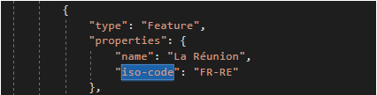
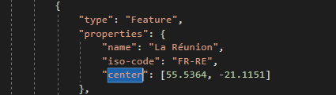
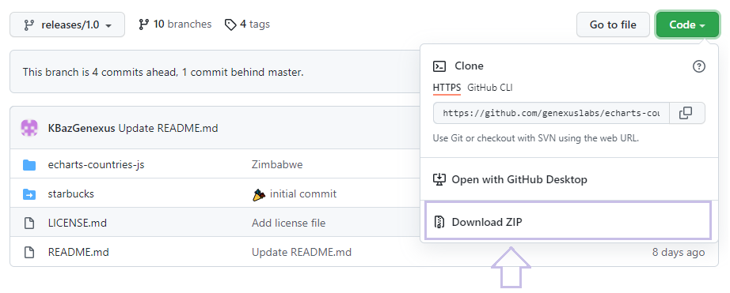
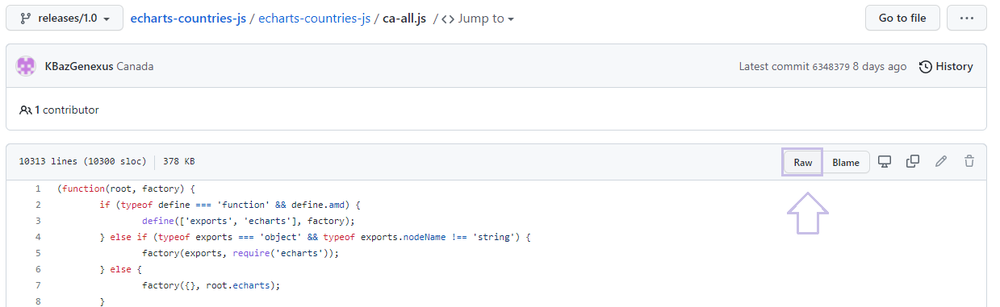

The QueryViewer control provides and supports the following maps:
These are the countries that are most used by the GeneXus community. With every map included in the QueryViewer the size of the deploy package increases. In order to keep it as small as possible no further maps will be, by default, included in QueryViewer.
But you can still use any country you need. You simply have to follow the steps below:
1) Access the following Github repository: https://github.com/genexuslabs/echarts-countries-js/tree/releases/1.0
2) Choose the country map that you need and download it.
3) If you want to use ISO 3166-2 codes as the geographical dimension you will need to make some editions to the map as explained below.
4) Copy the downloaded map in the following GeneXus directories:
5) Restart GeneXus
To use a map from the Github repository above and use ISO 3166-2 codes as the geographical dimension you must edit and add the ISO 3166-2 codes for all the first level subdivisions of that country.
To do so, open the js file of the required map (i.e. if you want to add the ISO 3166-2 codes of France, the map name will be fr-all.js).
In the fr-all.js file, inside the properties of each subdivision, add the "iso-code" property as shown in the following example:

You can find the iso code of each country and subdivision in ISO - International Organization for Standardization.

This is useful when you use bubble maps (with ISO 3166 codes) and want the bubble to be centered in specific coordinates.
By default the position of the bubbles is calculated as the center of the region's polygon but for some areas that doesn't represent very well the main geographic area, or it's located outside the polygon for very irregular areas.
1. If you need all the country map collection you can download this in a zip folder:

2. If you need only some maps and you want to download individually, you can follow the next steps:
-Select the map of the country that you want
-Select "Raw"
-Press "Ctrl+S" and you can save it with the original name.

| Backlinks | |
| Maps in QueryViewer | Toc:Reporting in GeneXus |